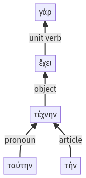

Lysias, Oration 1, 1.16.51-1.16.55a
1.16.32-1.16.50a | 1.19.16-1.19.38a
Sentence 42
1.16.51-1.16.55a
ταύτην γὰρ τὴν τέχνην ἔχει".
ταύτην γὰρ τὴν τέχνην ἔχει".
Highlighting:
- connecting words
- unit verb
- subject
- object
Color code:
- Independent clause (level 1, transitive verb)
